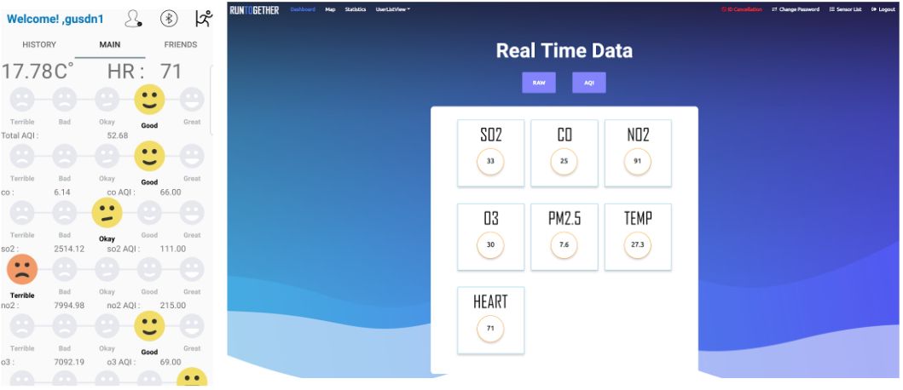
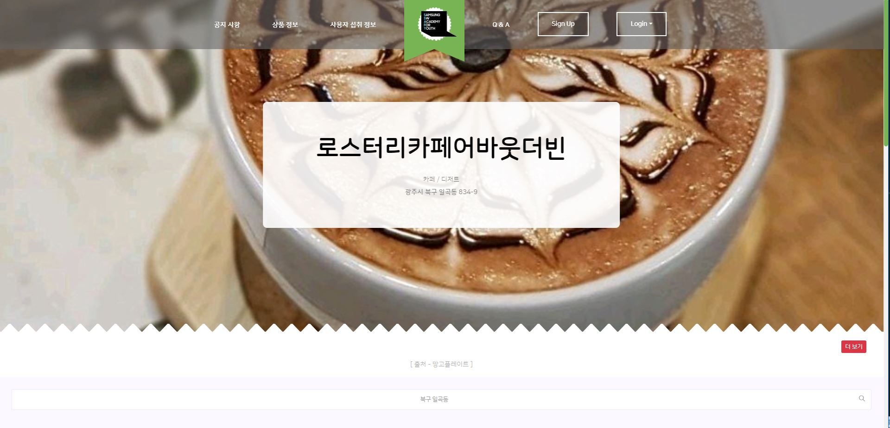
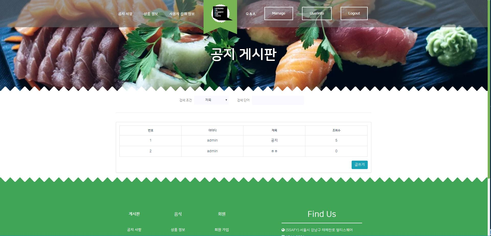

지금까지 이런 놈은 없었다
이것은 해커인가, 개발자인가
보안하는 개발자, 최용선입니다
이것은 해커인가, 개발자인가
보안하는 개발자, 최용선입니다
프로젝트 목록 (클릭 시 이동)
2017. 09 ~ 2017. 12
IOT 취약점 분석 및 포렌식 방안 도출
- 개요 : IoT 디바이스 관리자 권한 탈취, 카메라 및 기기 원격 제어
2018. 03 ~ 2018. 05
IOC를 이용한 침해 상황 탐지
- 개요 : 배포된 IoC 룰을 이용하여 PC 침해 상황을 점검, 결과를 시각화하는 프로그램
2018. 07 ~ 2018. 08
IOT HEALTHCARE DEVELOPMENT
- 개요 : 센서, 안드로이드, 웹서버를 연동하여 대기질, 심박수 등을 측정하여 실시간으로 표현하고, 통계를 시각화하는 프로그램
2018. 10 ~ 2018. 12
샌드박스 기반 웹페이지 내 악성코드 탐지
- 개요 : 웹페이지 내 첨부파일들을 샌드박스에서 동적분석 후 결과를 시각화하는 프로그램
2019. 09 ~ 2019. 11
식품 섭취 정보 확인 및 맛집 추천 서비스 개발
- 개요 : 사용자가 섭취한 식품의 영양 정보 통계 및 시각화, 웹 크롤링을 이용한 맛집 추천 서비스
IOT 취약점 분석 및 포렌식 방안 도출
Best of the Best 5th
개요 : IoT 디바이스 관리자 권한 탈취, 카메라 및 기기 원격 제어
기간 : 2017. 09 ~ 2017. 12
기여도 : 30%
역할 : 공격벡터 선정 및 Exploit 작성
산출물 : LG전자 보안 취약점 탐지 감사장, 해외 컨퍼런스 발표
프로젝트 환경
Target : LG 로보킹
Web : Python3, Flask
SSL Server : C++
Disassembly Tool : IDA Pro
Exploit : Python2
프로젝트 내용
[그림 1] 로봇청소기 동작 원리
- 로봇청소기와 모바일 디바이스 간 통신 프로토콜 확인
- 로봇청소기의 UART 포트를 이용한 펌웨어 추출 가능성 확인
- AP 정보를 전송하는 과정에서의 논리적 취약점 발생 가능성 확인
[그림 2] 로봇청소기 UART
- 로봇청소기의 UART 포트 확인 및 연결에 성공
- But, 관리자 Login 아이디 / 패스워드가 필요하여 펌웨어 추출 실패
[그림 3] JSON 형태로 전달되는 AP 정보
- 모바일 디바이스에서 AP 정보를 로봇청소기에 전달하는 과정 확인
- JSON으로 전송되며, SSID와 PWD에서 Command Injection 취약점 존재 확인
[그림 4] 관리자 권한 획득
- Command Injection을 이용하여 Telnet 바이너리 업로드 및 서비스 오픈
- 관리자 권한 획득
[그림 5] 취약 코드
- 추출한 펌웨어에서 취약점이 발생한 코드 확인
[그림 6] 카메라 탈취 및 원격 조작
- Fake SSL 서버 구현, 연결하여 MITM(Man In The Middle) 공격
- 통신 프로토콜 탈취 및 원격 조작
- Flask 서버에서 탈취한 영상 정보 송신
IOC를 이용한 침해 상황 탐지
Chosun University
개요 : 배포된 IoC 룰을 이용하여 PC 침해 상황을 점검, 결과를 시각화하는 프로그램
기간 : 2018. 03 ~ 2018. 05
기여도 : 40%
역할 : 웹 프론트엔드, 백엔드 구현 (Python - Flask), 데이터베이스 설계 (SQLite), 결과 시각화
산출물 : 특허 등록 (10-2018-0100048)
프로젝트 환경
Client : Python3, PyQT
Web : Python3, Flask
Database : SQLite3
프로젝트 내용
[그림 1] 프로젝트 전체 흐름도
1. 회원 가입, 로그인 후 클라이언트 프로그램에서 PC 스캔 요청
2. IoC 룰 업데이트 서버에서 로컬 PC에 IoC 최신 룰 업데이트
3. PC 스캔 및 침해 상황 탐지, 결과 확인
4. 백엔드 서버에 결과 전송
5. 웹 프론트엔드에서 결과 및 통계 확인
[그림 2] 클라이언트 프로그램 로그인 화면
- Python3 + PyQT를 이용하여 화면 구성
[그림 3] 로그인 후 메인 화면
- 이전 보고서 결과 확인 가능
- '검사시작' 버튼으로 PC 스캔 시작
[그림 4] 검사 화면
- IoC 룰과 일치하는 파일이 있는지 검사 및 실시간으로 결과 확인
- 검사 종료 후 서버로 결과 전송
[그림 5] 웹에서 결과 시각화
- 검사 종료 후 웹에서 로그인하여 결과 및 통계 확인
- [검사 날짜/시각]이 표현된 버튼을 선택하여 이전 결과 확인
IOT HEALTHCARE DEVELOPMENT
Qualcomm Institute
개요 : 센서, 안드로이드, 웹서버를 연동하여 대기질, 심박수 등을 측정하여 실시간으로 표현하고, 통계를 시각화하는 프로그램
기간 : 2018. 07 ~ 2018. 08
기여도 : 30%
역할 : 웹 프론트엔드, 백엔드 구현 (PHP - Slim), 데이터베이스 설계 (MySQL), 센서 데이터 실시간 업데이트, 결과 시각화
프로젝트 환경
Web : PHP7, Slim
Database : MySQL
App : Java, Android Studio
Sensor : Python3
프로젝트 내용
[그림 1] 앱(좌) 및 웹(우)
- GPS를 이용하여 현재 위치 확인
- START 버튼 선택 시 이동한 경로 지도에 표시
- END 버튼 선택 시 이동 종료
 [그림 2] 웹/앱에서 센서 데이터 확인
- 대기질, 온도, 심박수 센서에서 받아온 데이터 실시간으로 웹/앱에서 표현
[그림 3] 웹/앱에서 통계 확인
- 웹/앱에서 1주, 1개월, 1년 단위로 통계 확인
샌드박스 기반 웹페이지 내 악성코드 탐지
Best of the Best 5th
개요 : 웹페이지 내 첨부파일들을 샌드박스에서 동적분석 후 결과를 시각화하는 프로그램
기간 : 2018. 10 ~ 2018. 12
기여도 : 80%
역할 : 웹 프론트엔드, 백엔드 구현 (Python - Flask), 웹 크롤링, 샌드박스 설치 및 연동 (Cuckoo Sandbox), 결과 시각화
프로젝트 환경
Web : Python3, Flask
Database : MySQL
Sandbox : Cuckoo Sandbox
프로젝트 내용
[그림 1] 웹 메인페이지
- 첨부파일이 포함된 웹페이지 URL 입력
- Search 버튼을 선택하여 검사 시작
[그림 2] 검사 시작
- 크롤링을 이용하여 웹페이지 내 첨부파일 링크 추출
- 존재하는 첨부파일 링크 개수 확인
- Submit 버튼을 선택하여 샌드박스에서 파일 동적 분석 시작
[그림 3] 검사 시작
- 샌드박스에서 동적 분석이 완료되면 View Report 버튼 활성화
- View Report 버튼을 선택하여 결과 확인
[그림 4] 결과 확인
- 검사한 URL, 파일 링크, 동적 분석 결과, VirusTotal 결과 확인
[그림 5] 통계 확인
- 이전 결과를 기반으로 통계 시각화
식품 섭취 정보 확인 및 맛집 추천 서비스 개발
Samsung Software Academy For Youth 2nd
개요 : 사용자가 섭취한 식품의 영양 정보 통계 및 시각화, 웹 크롤링을 이용한 맛집 추천 서비스
기간 : 2019. 09 ~ 2019. 11
기여도 : 70%
역할 : 웹 프론트엔드 (Vue.js), 백엔드 구현 (Java - Spring Boot), 데이터베이스 설계 (MySQL - MyBatis), 웹 크롤링
산출물 : SSAFY 프로젝트 경진대회 최우수상
프로젝트 환경
Web FrontEnd : JavaScript, Vue.js
Web RESTful API Server : Java, Spring Boot
Crawling Server : Python3, Flask
Database : MySQL
프로젝트 내용
 [그림 1] 웹 메인페이지
- '망고플레이트' 맛집 정보 크롤링
- 하단에 입력한 주소(ex. 일곡동) 기준 맛집 상위 20곳 추출
- 슬라이더를 이용하여 맛집 정보 표시
- 슬라이더 클릭 시 해당 맛집 상세 정보 페이지로 이동
[그림 2] 메인 - 요리/맛집 기사
- 네이버 기사 중 요리/맛집 카테고리의 기사 상위 6개 정보 표시
- 기사 클릭 시 해당 기사 본문으로 리다이렉트
 [그림 3] 공지 게시판
- 관리자 계정으로 로그인 시 공지 게시판 글쓰기 버튼 활성화
- 관리자는 글 수정, 삭제 가능
[그림 4] 식품 리스트
- 등록된 상품 정보 확인
- 섭취 버튼 클릭 시 섭취량 순으로 자동 정렬
- 사진 또는 상세정보 클릭 시 해당 제품 상세 정보 확인
[그림 5] 식품 상세정보
- 성분 및 영양 정보 확인 가능
- 수량 선택 후 섭취 버튼 선택 시 해당 제품 섭취
[그림 6] 회원 섭취 정보
- 섭취한 제품 개수, 총 영양 정보 확인
- 섭취한 식품 정보 확인
[그림 7] 질문 게시판
- 회원 글 작성 / 수정 / 삭제 기능
- 댓글 작성 / 삭제 기능
- 대댓글 작성 기능
[그림 8] 관리자 페이지
- 관리자 로그인 시 회원 관리 페이지 접근 가능
- 회원 정보 확인 및 계정 삭제 가능
[그림 9] 맛집 지도
- 하단에 위치 검색(ex. 일곡동 / 북구 일곡동) 시 해당 위치로 지도 이동 및 맛집 상위 20개(망고플레이트 크롤링) 지도에 마킹
[그림 10] 맛집 리스트
- 20개 맛집 간략한 정보(가게명, 위치, 음식 종류) 표시
- 망고플레이트 조회수 표시
- 사진 선택 시 해당 맛집 상세정보 페이지로 이동
[그림 11] 맛집 상세정보
- 맛집 상세 정보 확인
- 슬라이더를 이용하여 가게 사진 표시